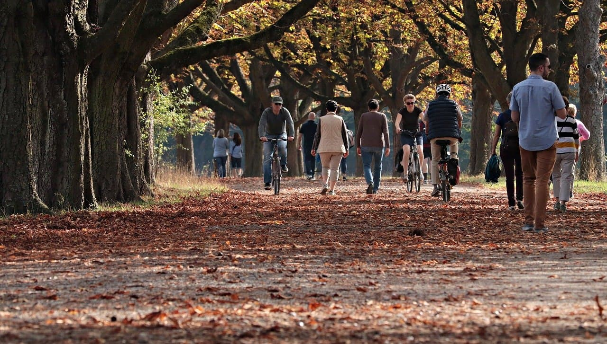

Поезія - слово! Поезія – пісня! Поезія - вільна душа!
Поезія – один з найгеніальніших винаходів людства. Перефразовуючи слова поета Бориса Олійника, можна сказати, що поезія «нас охрестила на людину, піднявши з чотирьох до піднебесь». Де і коли був написаний перший віршований твір – невідомо. Можливо, то була молитва, первісне заклинання чи гімн природі? А можливо, це було перше зізнання в коханні? В Японії вважається, що поезію принесли на землю боги. Існує легенда, що колись веселий бог вітру Сусаноо переміг восьмиголового дракона, врятувавши красуню Кусінаду. Сусаноо одружився з нею і побудував шлюбні покої, а під час будівництва склав перший вірш. Тож не дивно, що японців вважають найпоетичнішою нацією світу — в давнину у Японії існувало ціле Міністерство поезії, і до сьогодні в цій країні відбувається величезна кількість поетичних конкурсів, і навіть солідні ділові журнали обов’язково містять літературну сторінку, а у японських школах є уроки милування природою.
-
Сніжна зима
-
Весна прийшла
-
Мить кохання
-
Літній відпочинок
-
Батьківська хата
-

До столу!
-

Осінь у місті
Лягла зима, і білі солов’ї Затьохкали холодними вустами.
В холодні землі взулися гаї.
І стали біля неба як стояли.
Скоцюрбивсь хвіст дубового листа,
Сорока з глоду водить небо оком,
І вітер
пише вітрові листа,
Сорочим оком пише білобоко,
Що гай з землі дивився і стояв,
Що солов'ї маліли, як морельки,
А Київ, мов скажений, цілував
В степах село чиєсь, чуже, маленьке.
Що я з тобою ще одні
сніги Зимує на щасті, як на листі.
Нога в дорозі. Вітер з-під ноги.
І пам'ять наша - мак в колисці.
Стояла я і слухала весну,
Весна мені багато говорила,
Співала пісню дзвінку, голосну
То знов таємно-тихо шепотіла.
Вона мені співала про любов,
Про молодощі, радощі, надії,
Вона мені переспівала
знов
Те, що давно мені співали мрії.
Мені ти приснилась давно, ввійшла ти у думи мої.
Я море люблю, бо воно нагадує очі твої.
Розкрив я до сонця вікно й дивлюсь крізь проміння рої…
Я небо люблю,
бо воно нагадує очі твої.
І радісні квіти весни, коли у садах солов’ї,
люблю я фіалки — вони нагадують очі твої.
Літо, літо золоте
Випиває роси
Та з пшениченьки плете
Україні коси.
Виглядає з-поміж віт
Вишнями в садочку,
Одяга на цілий світ
Сонячну сорочку...
Я знаю запах рідної домівки.
Так пахне свіжий хліб і пиріжки,
Букет із чебрецю та материнки,
Лляний обрус і білі рушники.
Цей світлий образ рідної оселі,
Турботливих батьків блаженні дні,
Де я малий, щасливий та веселий,
Такий близький і дорогий мені.
Я відчуваю спокій в рідній хаті:
Зігріє, від негоди захистить,
Як Мати Божа береже дитятко,
На тій іконі, що в кутку висить.